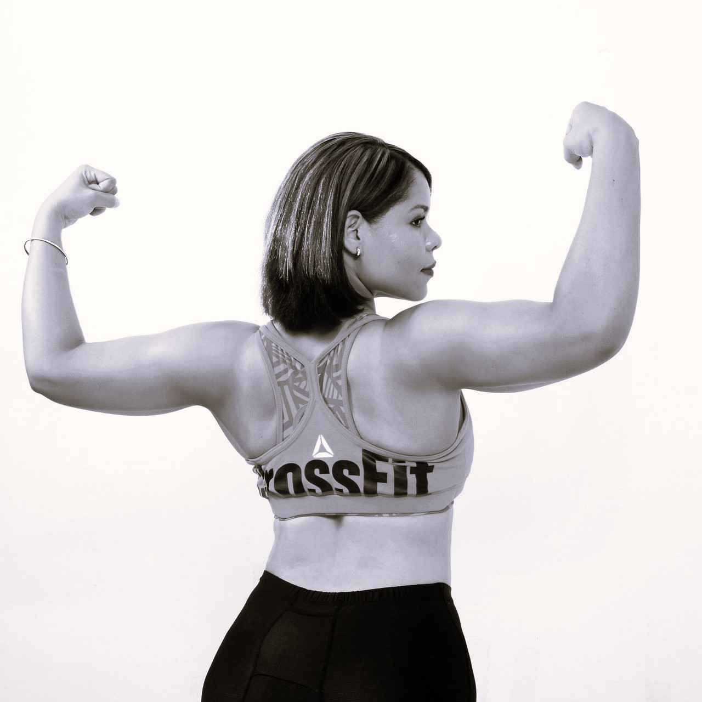

Dein Ziel ist es, deine körperliche Fitness weiter auszubauen, obwohl du im Großen und Ganzen mit
deiner Optik zufrieden bist? Du möchtest keine körperlichen Probleme beim Bewältigen deiner
alltäglichen Herausforderungen (mehr) haben? Oder möchtest du jetzt schon dafür sorgen, dass du auch
später im Leben fit und agil bleibst?
Das was du möchtest ist somit eine Mischung aus der Verbesserung deiner bereits vorhandenen
Ressourcen, aber auch gleichzeitig eine Prävention gegen mögliche Beschwerden. Und dafür musst du
deine Schwachstellen kennen.
Nein, du musst nicht plötzlich zum Marathonläufer mutieren, aber wenn du nach 30 Stufen schon schwer
atmest, ist es Zeit, um an deiner Ausdauer zu arbeiten. Du musst auch keine 100kg beim Kniebeugen
stemmen können, aber wenn du beim Aufstehen vom Sofa nur schwer hochkommst, solltest du an deiner
Kraft arbeiten. Auch musst du keinen Spagat können – aber wenn du deine eigenen Zehen nicht mehr
ohne Mühe berühren kannst, wäre mehr Beweglichkeit definitiv kein Fehler.
Das perfekte Programm ist also eine sinnvolle Kombination aus all dem oben genannten, damit keine
dieser Fähigkeiten ins Hintertreffen gerät. Doch all das wird dir nur bedingt etwas bringen, wenn
nicht auch deine Ernährung dein Ziel widerspiegelt. Wenn du fit und gesund sein möchtest, musst du
deinem Körper auch genau das als Grundlage geben. Verzicht ist dafür nicht der richtige Weg, sondern
eine realistische Einstellung zum Essen und eine Ernährung, die dir all die Nährstoffe bietet, die
du brauchst.
Möchtest du mehr zu diesem Thema erfahren? Buche jetzt einen kostenlosen Termin bei uns im Studio
und lass dich persönlich beraten. Gemeinsam finden wir den besten Weg für dich, mit dem geringsten
Aufwand und dem größten Nutzen.